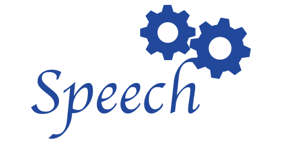
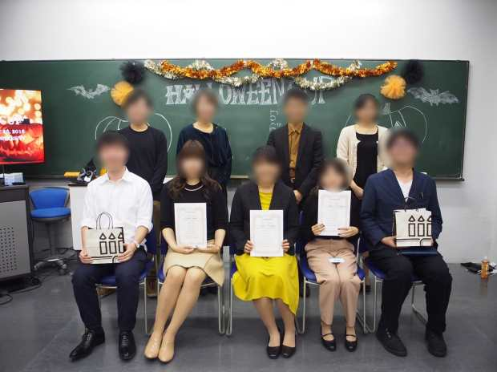

Speech
Speechとは
Speechとは、自分で原稿を書き、覚えて人前で発表し、Judgeから評価をもらうものです。他大と合同の大会やWRESSのみ大会をがあり、そこで7～8分のSpeechを行います。
Speechにおいて要求されることは、自分の主張を上手く相手に伝える高度な技術です。Discussionと異なり、Speechは一方的に話すため、一つ一つの言葉選びが非常に大切です。また、Debateは即興であるのに対し、Speechは準備があるため、より良い表現を選ぶ時間があります。自分の主張をまとめ英語にする時、日本語と英語の表現の違いを体感し、新しい英語表現に出会います。また、Speechを評価されると、欠けていた点を発見できます。こうして、英語力はもちろん、自分の思考回路も向上できます。
WRESSでSpeechをやってみませんか？ 私達が全力でサポートします！
